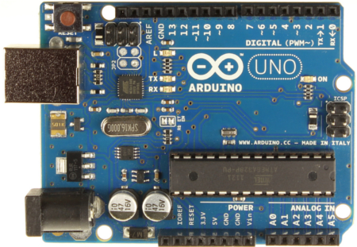

|
Arduino Uno - это устройство на основе микроконтроллера
ATmega328 (datasheet). В его состав входит все необходимое для
удобной работы с микроконтроллером: 14 цифровых входов/выходов
(из них 6 могут использоваться в качестве ШИМ-выходов), 6
аналоговых входов, кварцевый резонатор на 16 МГц, разъем USB,
разъем питания, разъем для внутрисхемного программирования
(ICSP) и кнопка сброса. Для начала работы с уcтройством
достаточно просто подать питание от AC/DC-адаптера или
батарейки, либо подключить его к компьютеру посредством
USB-кабеля. В отличие от всех предыдущих плат Ардуино, Uno в
качестве преобразователя интерфейсов USB-UART использует
микроконтроллер ATmega16U2 (ATmega8U2 до версии R2) вместо
микросхемы FTDI. На плате Arduino Uno версии R2 для упрощения
процесса обновления прошивки добавлен резистор, подтягивающий к
земле линию HWB микроконтроллера 8U2. Изменения на плате версии
R3: Распиновка 1.0: добавлены выводы SDA и SCL (возле вывода
AREF), а также два новых вывода, расположенных возле вывода
RESET. Первый - IOREF - позволяет платам расширения
подстраиваться под рабочее напряжение Ардуино. Данный вывод
предусмотрен для совместимости плат расширения как с 5В-Ардуино
на базе микроконтроллеров AVR, так и с 3.3В-платами Arduino Due.
Второй вывод ни к чему не подсоединен и зарезервирован для
будущих целей. Улучшена помехоустойчивость цепи сброса.
Микроконтроллер ATmega8U2 заменен на ATmega16U2. "Uno" (в
переводе с итальянского - "один") назван по случаю предстоящего
выпуска Arduino 1.0. Совместно с Arduino 1.0 данные устройства
будут базовыми версиями Ардуино. Uno - эталонная модель
платформы Arduino и является последней в серии USB-плат.
|


|